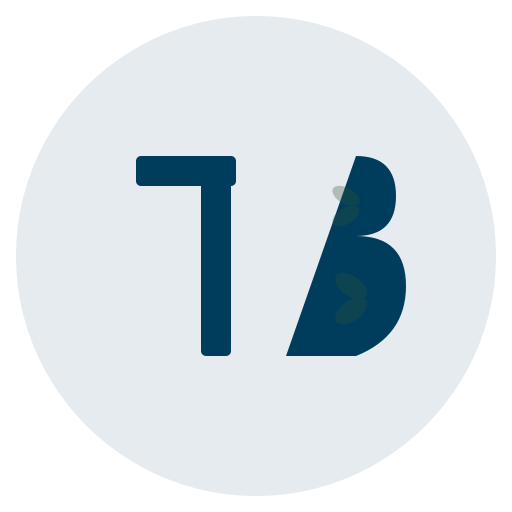
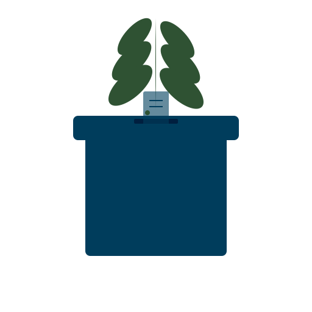

Logo Design Options
Silver fern integrated with document. Perfect for main branding and website headers. Combines NZ identity with political journalism theme.

Bold typography-focused design with fern accent. Ideal for compact spaces, social media avatars, and app icons.
Pure, simplified silver fern. Instantly recognizable. Perfect for favicons, watermarks, and minimal branding contexts.

Fern emerging from ballot box symbolizing democratic growth. Great for election content and voting guides.
Circular seal with parliament building silhouette. Official and authoritative feel. Best for formal documents and print materials.